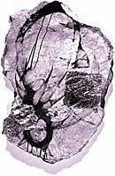

|
 David Geiser's Cratty |
Automatic VISCERA Internationally acclaimed painter David Geiser prepares for his next Portland Exhibition
BY RICHARD SPEER
Originally published in |
|
Geiser's painting Red Thorn I hangs at Butters Gallery (520 NW Davis St., 248-9378) in a group show through Aug. 30. His solo show opens Sept. 4 and runs through Sept. 27 |
New York painter David Geiser produces work that explodes with
drama, viscera, sensuality and several other qualities in short
supply at the gutless 2003 Oregon Biennial--and arguably in
the Northwest art scene as a whole. Harrell Fletcher, Brad
Adkins, Amos Latteier and others of the unassuming
artiste-as-mensch axis would well aspire to Geiser's
extroversion and fearlessness as a painter and thinker.
After living in SoHo, Geiser and his wife, actress Mercedes Ruehl, recently moved into a home a mile away from Jackson Pollock and Lee Krasner's one-time pied-à-terre in the East Hamptons. The painter jokes that ever since the move, the Ghost of Abstract Expressionism Past has been haunting his studio. I spoke with Geiser by phone as he finished up preparing for his September show at Butters Gallery, where one of his paintings, Red Thorn I, now hangs in a group show. Willamette Week: Do you consider yourself a neo-Expressionist? David Geiser: The way I work is a blend of Abstract Expressionism and the element of surprise or the subconscious, like the automatic painting of the Surrealists. It's abstract--it's not pretending to be a face or a human being--but it's coming from a real place; it's a real thing; it's paint on wood. And it can evoke something universal like ether or something primal like mold growing on a piece of bread. God is in these things. You're familiar with the whole "finish fetish" movement in painting, where painters obsess over getting these preternaturally smooth surfaces? Sure. But you really exploit surface. Your canvasses look like you splatter them with blood and guts. I really strive for that, which is one reason I think oil paint is the only real paint to work with. It's where the real story is. It's a metabolism that somehow connects with human metabolism. The thing that's always moved me about paint is that pigment is earth in solution. When you say, "the metabolism of paint," what do you mean by that? With each material I use--varnishes, turpentines, linseed oils--there's a different drying process. As they dry and pool, they take on a life of their own, and there seems to be a metabolism in how they move, which I discover by a sort of alchemical trial and error. The canvas becomes a petri dish, and you see what grows out of it. You're well-known nationally and internationally, but you come to Portland every year and have been for, what, 15 years or so? Right, since the inception of Butters Gallery, and it's been a wonderful journey. Jeff Butters has an extraordinary eye and sensitivity, and I love the physicality of Oregon, the ruggedness of the coast. And in terms of Portland, for a relatively small city, it has an amazingly good intellectual profile and collector base. The Oregon Biennial is up now, and it's troubling to see what a lot of young artists are coming up with: these Fraggle Rock-looking puppets and cutesy work that's reaching for whimsy, as if our generation is reliving Saturday-morning cartoons in lieu of making serious art. There's a lot of that goofy pop imagery now. It's throwaway, often somebody else's throwaway, reconstituted. That's why you don't hang in front of an art work for a long time anymore. There's no resonance that compels you to stay there. It's like flipping through the channels of TV. So many artists have lost sight of what the possibilities are. Everybody's looking at the next big thing, trying to get their foot in the door instead of exploring who they are. As an artist you don't just reflect pop culture and the banality of existence; you've got to show that there's something extraordinary here, not just an easy-access image. That's certainly a Romantic conception of the artist. Christ, that's the only thing left! I don't want cool and glib and wry and absurd reflected back at me! I want to go beyond, into that mystery and magic that compels you to look at a sunset or the serpentine rivers underneath you when you're flying in a plane. It's the theories of Expressionism versus Pop; it's passion versus soup cans. But you know, the worse things get in the art world, the more potency I have in my work. We should be out there, feeling self-righteous, carrying the spear into war. It shouldn't come easy.
Originally published
|